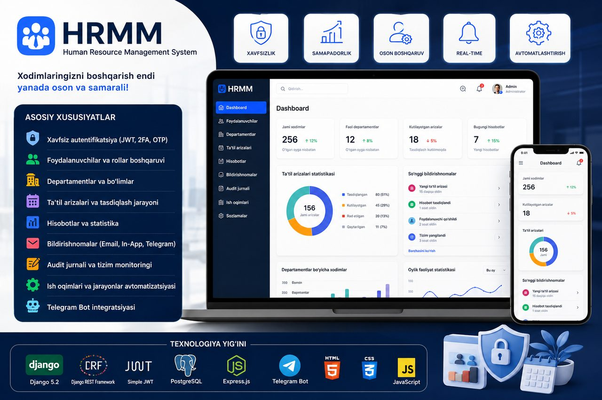
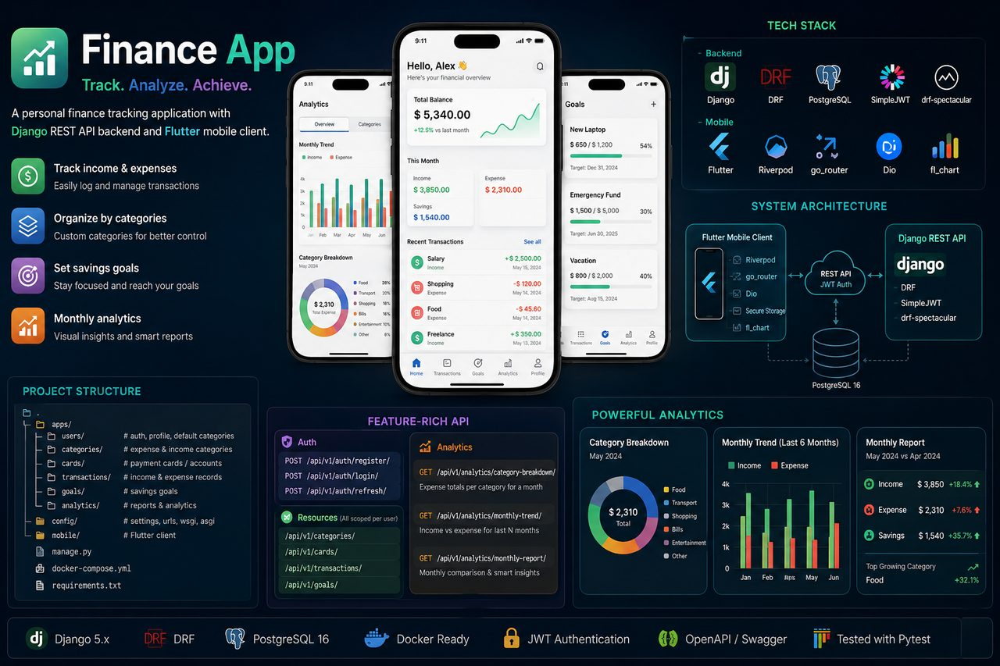

// SYSTEM STATUS: ACTIVE (Ishga tayyor · Remote / Ofis)
Muhammadyusuf Mamaniyozov
BACKEND / FULL-STACK DEVELOPER
Django, DRF va ASP.NET asosida production darajasidagi backend tizimlar quraman — REST API, xavfsiz autentifikatsiya va real foydalanuvchilar ishlatadigan integratsiyalar.
Django va ASP.NET ekotizimida ishlaydigan backend dasturchiman. Kunlik ishim — REST API loyihalash, ma'lumotlar bazasi sxemasini tuzish va tizimlarni production'ga chiqarish. Har bir loyihada uch narsaga e'tibor beraman: ma'lumot yaxlitligi, autentifikatsiya xavfsizligi va deploydan keyin ham tushunarli qoladigan kod.
Hozir "RIO vs RIATM" onkologiya markazida Karmed tibbiy tizimini qo'llab-quvvatlayman: backend xatoliklari, PostgreSQL ma'lumotlari, FastReport hujjatlari va Telegram botlar. Bu ish menga real foydalanuvchilar har kuni ishlatadigan tizimda xatoning narxi qanchaligini o'rgatdi.
JoylashuvSamarqand, O'zbekiston · UTC+5
TillarO'zbek (ona tili) · Rus · Ingliz (texnik)
BandlikRemote yoki ofis · to'liq stavka / kontrakt
Karmed tibbiy tizimini kundalik qo'llab-quvvatlash: backend xatoliklarini topish va tuzatish, PostgreSQL ma'lumotlarini chiqarish va to'g'rilash, FastReport hisobot shablonlari, ishdan chiqqan Telegram botlarni tiklash. Klinika xodimlari har kuni ishlatadigan tizim — shuning uchun har bir o'zgarish oldindan tekshiriladi.
2023 — 2025
Freelance Full-Stack dasturchi
Samarqand
Loyihalarni boshidan oxirigacha olib bordim: talablarni yig'ish, ma'lumotlar bazasi sxemasi, Django backend, deployment va topshiriqdan keyingi qo'llab-quvvatlash. PostgreSQL, FastReport va Telegram integratsiyalari bilan ishladim.
2025
Bakalavr — Axborot texnologiyalari muhandisi
TATU Samarqand filiali · AT-Servis
Axborot texnologiyalari muhandisligi yo'nalishi bo'yicha bakalavr darajasi.
// FEATURED PROJECTS
Loyihalarim
Har bir loyiha uchun: qanday muammo bor edi, nima qurdim va natijada nima o'zgardi.
Bu filtr bo'yicha loyiha topilmadi. Boshqa filtrni tanlang.

01 HR PLATFORMA
HRMM — Human Resource Management System
Muammo
Xodimlar ma'lumotlari, davomat va ta'til arizalari alohida jadvallar va qog'ozlarda tarqoq edi. Har oylik hisobot qo'lda yig'ilar, kim nimani o'zgartirgani esa hech qayerda qayd etilmasdi.
Yechim
Django + DRF asosida yagona tizim qurdim: xodimlar bazasi, davomat, ta'til arizalari oqimi va avtomatik hisobotlar. Telegram bot xodimlarga bildirishnoma yuboradi, JWT + 2FA/OTP kirishni himoyalaydi, audit jurnali esa har bir o'zgarishni kim va qachon qilganini yozib boradi.
Natija
HR jarayonlari bitta tizimga ko'chdi: hisobot qo'lda yig'ilmaydi, ta'til arizasi Telegram orqali keladi va ketadi, har bir yozuv o'zgarishi kuzatiladi.
DjangoDRFPostgreSQLTelegram BotJWT · 2FA

02 API + MOBIL
Finance App — Hamyon & Analitika
Muammo
Shaxsiy xarajatlar bir necha ilova va daftarga bo'lingan edi. Oy oxirida "pul qayerga ketdi" degan savolga javob topish uchun hamma narsani qo'lda yig'ish kerak bo'lardi.
Yechim
Django REST Framework backend va Flutter mobil klientdan iborat tizim. Kategoriyalar bo'yicha xarajat tahlili, oylik hisobotlar va jamg'arma maqsadlari. Tranzaksiya API'si SimpleJWT bilan himoyalangan, asosiy oqimlar Pytest bilan qoplangan.
Natija
Xarajat kiritish telefondan bir necha soniyada bajariladi, oylik ko'rinish esa qo'lda hisoblashsiz avtomatik shakllanadi.
Kasalxona ichida navbat taqsimoti va shifokorlar o'rtasidagi muloqot telefon qo'ng'iroqlari va qog'oz ro'yxatlar orqali kechardi. Kim qaysi bemorni qabul qilayotgani markazlashgan holda ko'rinmasdi.
Yechim
Rollarga asoslangan REST API: kasb bo'yicha navbatlar, real vaqtda ishlaydigan chat xonalari va PDF hisobot generatsiyasi. Butun API Swagger orqali hujjatlashtirilgan, shuning uchun frontend jamoasi hech kimdan so'ramasdan integratsiya qila oladi.
Natija
Navbat va muloqot bitta API ortida birlashdi; hisobotlar PDF ko'rinishida to'g'ridan-to'g'ri tizimdan olinadi.
Kurs materiallari, o'quvchilar progressi va sertifikatlar qo'lda boshqarilardi. Kim qaysi modulni tugatgani aniq emas, sertifikat esa har safar alohida tayyorlanardi.
Yechim
Kurs → modul ierarxiyasi ustiga qurilgan backend: foydalanuvchi progressini avtomatik kuzatish, yangiliklar lentasi va tugatilgan kurs uchun PDF sertifikat generatsiyasi. Logout JWT blacklist orqali amalga oshiriladi, ya'ni chiqilgan token qayta ishlatilmaydi.
Natija
Progress va sertifikat jarayoni to'liq avtomatlashdi; o'qituvchi qo'lda ro'yxat yuritmaydi.